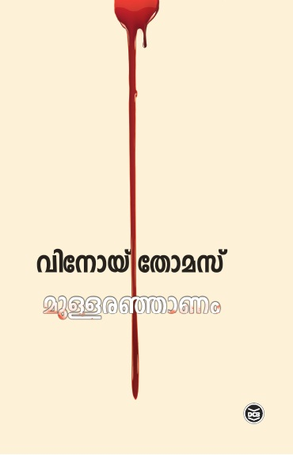

Author: വിനോയ് തോമസ്
Review by: മേരി കെ വി
പല നിലയ്ക്കും ശ്രദ്ധേയമായ ഏഴു കഥകളുടെ സമാഹാരമാണ് 'മുള്ളരഞ്ഞാണം'. ചെറിയ അനുഭവങ്ങളിലൂടെ അനാവരണം ചെയ്യപ്പെടുന്ന വലിയ ലോകങ്ങൾ വായനക്കാർക്ക് പ്രത്യേക അനുഭൂതി നൽകുന്നു. 'ആനന്ദ ബ്രാൻ്റൻ' എന്ന കഥയിലെ കേന്ദ്രകഥാപാത്രമായ നിജേഷിൻ്റെ ആനന്ദാന്വേഷണങ്ങൾ ചാക്കാട് തെരുമുതൽ കണ്ണൂരിലും എറണാകുളത്തും ടോക്യോവിലും ബാലി ദ്വീപിലും ലണ്ടനിലും അവസാനം ഫ്രഞ്ച് പോളിനേഷ്യയിലെ തഹീതി ദ്വീപിലെത്തി നിൽക്കുമ്പോഴേക്കും ബ്രാൻ്റ്മീയതയുടെ അടിസ്ഥാന തത്വമായ ജന്മം കൊണ്ടു തന്നെ ഓരോരുത്തരും ഓരോ ബ്രാൻ്റുകളാണ് എന്ന പരമമായ സത്യം അവൻ തിരിച്ചറിയുന്നു.
വാക്കുകൾ കൂട്ടിച്ചേർത്ത് സംസാരിക്കാൻ കഴിവില്ലാത്ത കുട്ടൂസ് എന്ന കുട്ടിയും മരങ്ങളോട് സംസാരിച്ച് അവയുടെ ചെരിവും വളവും വളർച്ചയും കായ്പും വരുതിയിൽ നിർത്താൻ കഴിവുള്ള കൊച്ചു തെയ്യാ വല്യമ്മച്ചിയും തമ്മിലുള്ള സാംസ്കാരിക അകലമാണ് 'കുട്ടുകുറുക്കത്തീ കുർ...കുർ...' എന്ന കഥയുടെ പൊരുൾ.
പാഠപുസ്തകനിർമ്മിതിക്കു പിന്നിലെ അരാഷ്ട്രീയതയും അതിൻ്റെ രാഷ്ട്രീയവും ഫലിതത്തിൽ ചാലിച്ചെഴുതിയ 'തുഞ്ചൻഡയറ്റി' ൽ മാടമ്പള്ളിയിലെ യഥാർഥ മാനോരോഗിയാരാണെന്ന് തിരിച്ചറിയുമ്പോൾ ഓർത്തോർത്ത് രസിക്കാൻ ശിവദാസൻ സാറിലേക്ക് നാം വീണ്ടും മടങ്ങിപ്പോകും.
ലൈംഗികമായ പാപബോധവും ശരീരത്തിൻ്റെ ജൈവികതയെ ഹനിക്കുന്ന സദാചാരനിഷ്ഠകളും പെൺകുട്ടികളെ കൂച്ചുവിലങ്ങിട്ടു നിർത്തി, എല്ലാവിധ പ്രതിരോധ ചിന്തകളും കെടുത്തി അടിമകളാക്കുന്നു. ഈ യാഥാർഥ്യത്തെ ചടുലതയോടെ 'മുള്ളരഞ്ഞാണം' എന്ന കഥയിൽ ആവിഷ്കരിച്ചിരിക്കുന്നു. മതം മനുഷ്യ സ്വാതന്ത്ര്യത്തിനുമേൽ നടത്തുന്ന പല അധിനിവേശങ്ങളെയും ചെറുത്തു തോല്പിക്കാൻ ശ്രമിക്കുന്ന 'കവിത' എന്ന കഥാപാത്രം തൊടുത്തുവിടുന്ന പല ചോദ്യങ്ങളും വായനക്കാരൻ്റെ ഹൃദയത്തിലേക്കാണ് പതിക്കുന്നതെന്നതിൽ സംശയമില്ല.
ലളിതമായ ഭാഷയിൽ നർമത്തിൽ ചാലിച്ചെഴുതിയ ഇതിലെ കഥകളെല്ലാം തന്നെ യാഥാർഥ്യബോധം ഉൾക്കൊണ്ട് ആവിഷ്കരിച്ചിരിക്കുന്നു എന്നതിനാൽ വായനക്കാരന് തെല്ലും നിരാശപ്പെടേണ്ടതില്ല.